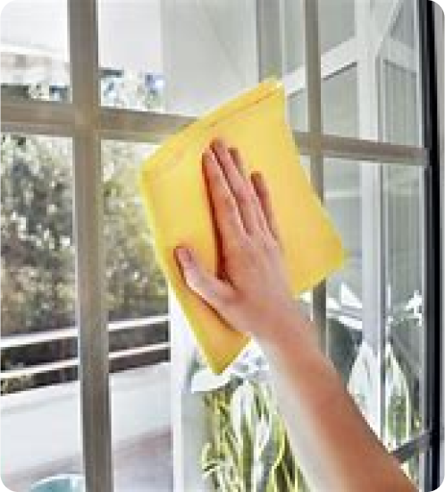
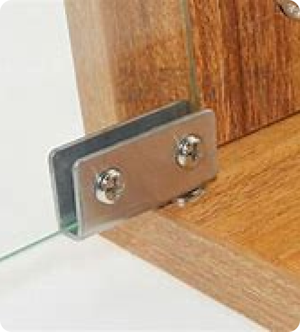

Use um pano seco para tirar a poeira e sujeira solta das superfícies. Misture algumas gotas de detergente neutro em um balde com água morna. Use uma esponja macia ou pano de microfibra para limpar o vidro, esfregando suavemente para não riscar. Passe um pano úmido para remover o excesso de sabão. Para evitar manchas de água, use um rodo para secar o vidro. Comece de cima para baixo e limpe o rodo entre cada passada. Para um brilho extra, passe um pano com álcool ou limpa-vidros em toda a superfície, garantindo que não fiquem marcas.
Se a porta estiver com ruído nas dobradiças tente aplicar desengripante nas dobradiças enquanto abre e fecha as portas, se isso não funcionar entre em contato conosco e enviaremos um de nossos tecnicos para verificar e resolver o problema.
Uma provavel causa para este problema é o acumulo de sujeita nos trilhos ou falta de lubrificação nas roldanas, tente limpar os trilhos com uma escova ou aspirador e aplicar desemgripante nas roldanas. Se isso não funcionar entre em contato conosco e enviaremos um de nossos tecnicos para verificar e resolver o problema.